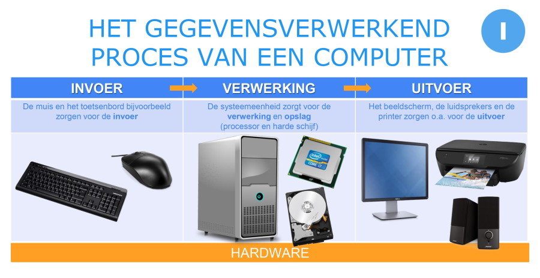

Een computer werkt met invoer, verwerking en uitvoer. Deze drie stappen zorgen ervoor dat een computer een opdracht kan uitvoeren en een resultaat kan laten zien.
Invoer is de informatie die je aan een computer geeft. Dit kan bijvoorbeeld met een toetsenbord, muis, microfoon of touchscreen.
Voorbeeld: je typt een som op je computer.
Bij de verwerking gaat de computer met de ingevoerde informatie aan de slag. De processor voert berekeningen uit en verwerkt de gegevens.
Voorbeeld: de computer rekent de som uit.
Uitvoer is het resultaat dat de computer teruggeeft. Dat kan bijvoorbeeld op een beeldscherm, via geluid of met een printer.
Voorbeeld: je ziet het antwoord op het scherm.

Stel dat je op je telefoon een rekenmachine gebruikt. Je voert een som in, de telefoon rekent de som uit en daarna verschijnt het antwoord op het scherm.
Invoer: je voert de som in.
Verwerking: de telefoon rekent de som uit.
Uitvoer: het antwoord verschijnt op het scherm.
Hieronder voeg ik een korte YouTube-video toe over invoer, verwerking en uitvoer.